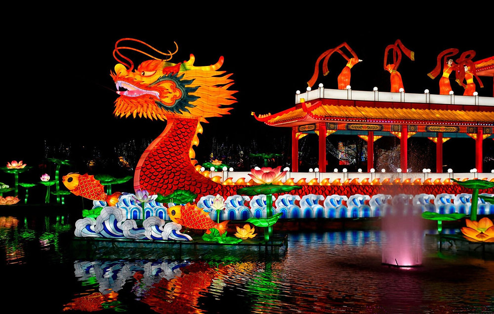
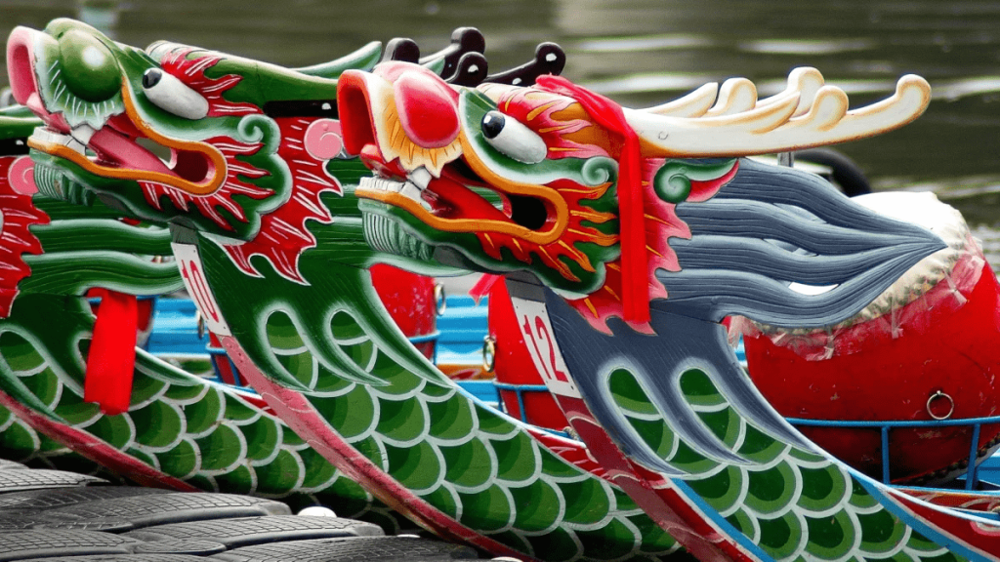
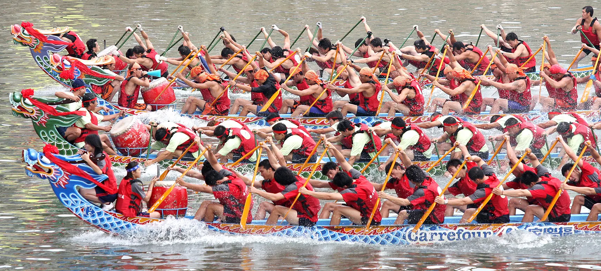
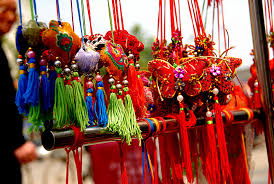

¿Qué es el Festival del Bote del Dragón?
El Festival del Bote del Dragón es una festividad tradicional china celebrada cada año para honrar al poeta y ministro Qu Yuan, símbolo de lealtad y patriotismo.
Esta celebración destaca por sus emocionantes carreras de botes decorados como dragones, acompañadas de tambores, música y tradiciones ancestrales.
Origen de la Celebración
Según la tradición, Qu Yuan se arrojó a un río como acto de protesta política. Los habitantes intentaron salvarlo navegando rápidamente en botes y lanzando arroz al agua para proteger su cuerpo de los peces.
Con el tiempo esta tradición evolucionó hasta convertirse en las actuales carreras de botes dragón.
Tradiciones Principales
- Carreras de botes dragón
- Uso de tambores tradicionales
- Preparación de zongzi (arroz envuelto en hojas)
- Decoraciones con símbolos protectores
- Celebraciones culturales en ríos y lagos
Galería del Festival


